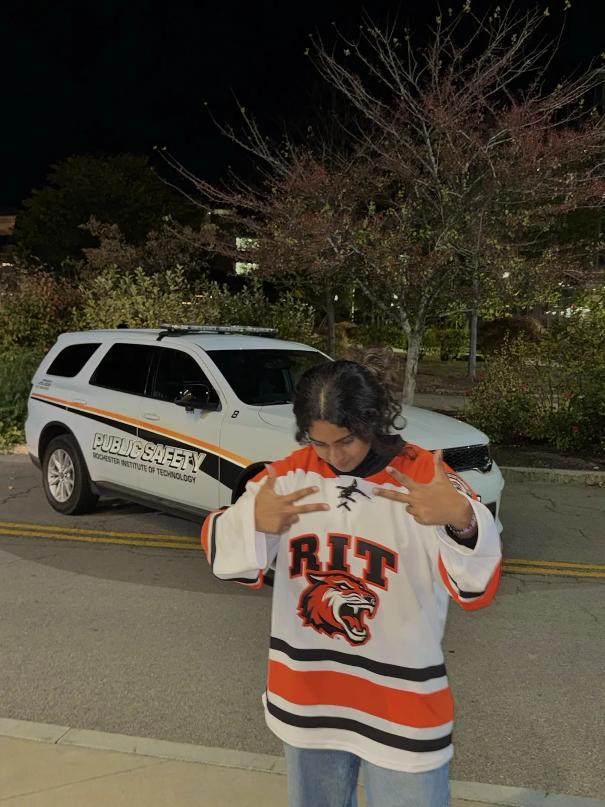

About
Anusha
Seshadri

Profile
AI Engineer at Digestive Disease Care in New York City, leading the AI and data science function across claims, revenue cycle, and interoperability. M.S. in Data Science from Rochester Institute of Technology; B.Tech in Computer Science from Vellore Institute of Technology.
Holder of an Indian patent for an AI-driven clinical risk prediction framework, with two peer-reviewed publications and an MSR 2026 Mining Challenge study. Foundations in Python, PyTorch, and CUDA, with experience on large-scale sensor and imaging-adjacent datasets in multidisciplinary research settings — and a preference for problems where the data is messy, the stakes are real, and the answer has to be both rigorous and interpretable.
Outside work: music · theatre and public speaking · ASL storytelling · reading · thrifting · writing
Experience
Career
- Leading an AI and data science initiative focused on claims and revenue-cycle operations — a denial-prediction model, automated insurance verification at intake, and payer performance analytics — in active discovery with billing and clinical teams.
- Scoping an interoperability layer to standardise payer data exchange, evaluating HL7 FHIR-based integration with the practice's Epic environment for real-time eligibility checks and cost estimation.
- Designing an OCR-based insurance-card intake pipeline paired with historical billing data to generate pre-visit out-of-pocket cost estimates for patients.
- One of two founding members of DDC's AI/Data Science function, positioned to lead the team as it scopes and hires additional engineers.
- Developed and applied deep learning methods to large-scale sensor and time-series data, building and optimising computational approaches for anomaly detection and pattern recognition on real-world operational datasets from the NGAFID aviation database.
- Designed, built, and trained models with PyTorch and CUDA on NVIDIA GPU — training 10,000+ neural network architectures in parallel via neuroevolutionary search (EXAMM) — with rigorous quantitative analysis and statistical validation.
- Applied generative AI and foundation-model approaches (Anthropic Claude API) to develop new computational methods for workflow automation, contributing reusable AI patterns and integrating AI capabilities into research and operational workflows with cross-functional teams.
- Developed and applied machine learning methods to large-scale sensor and behavioural datasets — classification, anomaly detection, and pattern recognition — improving system efficiency by 15% and reducing errors by 20% in a multidisciplinary engineering environment.
- Designed and deployed deep-learning-based prediction pipelines from data ingestion through model serving, applying neural network architectures and generative-AI-adjacent modelling in a research-to-production workflow.
Education
M.S. · Data Science
Rochester Institute of Technology · Rochester, NY
B.Tech · Computer Science & Engineering
Vellore Institute of Technology · specialisation: Information Security
Technical skillsSkills
Healthcare & interoperability
- HL7 FHIR
- Epic
- EHR / payer integration
- Insurance claims analytics
- Denial prediction
- Revenue cycle analytics
- OCR pipelines
- HIPAA · SHIELD Act compliance
Deep learning & computer vision
- PyTorch
- TensorFlow
- Keras
- CNNs · RNNs · Transformers
- Image recognition
- Segmentation
- Pose estimation
- Skeletal keypoint extraction
- Object detection
- OpenCV
- MediaPipe
Generative AI
- GANs
- Diffusion models (foundations)
- Foundation models
- Multimodal models
- LLMs
- Anthropic Claude API
- OpenAI
- LangChain · LangGraph
- RAG pipelines
Quantitative & ML
- Statistical modelling
- Feature engineering
- Anomaly detection
- Causal inference
- Probabilistic modelling
- Scikit-learn
- Neuroevolution
- Fuzzy logic
- PSO optimisation
- Explainable AI
- Qiskit (quantum kernels, Grover, QKD)
Infrastructure
- CUDA · NVIDIA GPU
- Docker
- GitHub Actions · CI/CD
- AWS (S3, EC2, Lambda)
- GCP
- Apache Spark
- Weights & Biases
- Experiment tracking
Languages & research
- Python
- SQL
- Java
- TypeScript · JavaScript
- C++
- Scala
- Peer-reviewed publication
- Patent author
- Reproducible research
Get in touch
Questions about the work? Let's talk.